← 返回阅读库 · 原论文目录
论文讲解阅读文档 · 论文精读 · v242
反向传播被判死刑！？“去噪学习”杀疯了：NoProp
视频时长 00:21:33；讲解文字 6,771 字符；提取讲解画面 87 张。按视频原顺序阅读，每段文字保留时间戳。
文字来自整段视频的自动语音转写，按自然停顿分段，并与 PPT / 论文页面 / 演示画面对齐。未将讲解压缩为摘要；术语、数字和口述公式请结合画面及原论文核对。 阅读稿已校正规范部分明确术语误识别；原始逐字稿和每处修改记录另行保留。
讲解画面为源视频截图（640×360），不是可编辑 PPT 文件。全片按每秒 2 帧扫描内容变化，逐步展开页保留；连续动画保留代表画面。清晰度受源视频限制。
下载完整资料包 · 含离线 HTML、PDF、Word、全部 PPT 画面和字幕。
原论文与材料
NoProp: Training Neural Networks without Full Back-propagation or Full Forward-propagation · 下载完整 PDF（20 页）
按时间阅读
00:00:00–00:00:04 · 画面 001
00:00:00–00:00:04 · 画面 001OpenAI 的 Solar 训练烧掉 5 亿美金，Google Gemini 每天垫废顶一家工厂。然而在前几天 ，牛津大学团队放出神秘论文，竟让 Hinton 老爷子苦寻 40 年的反向传播杀手提前降临。没有前向传播也无需反向传播，在部分数据集上仅需一半的显存就可以获得与反向传播相当甚至是超越的信任。
00:00:04–00:00:08 · 画面 002
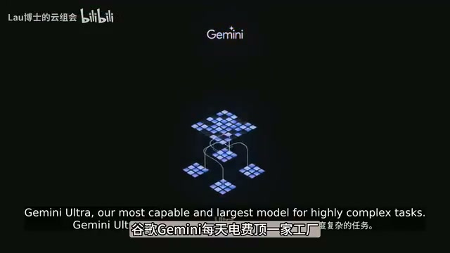
00:00:04–00:00:08 · 画面 00200:00:08–00:00:12 · 画面 003
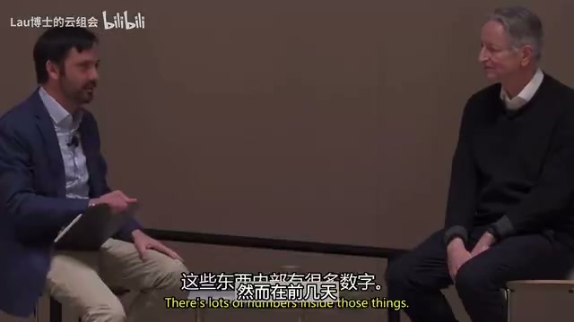
00:00:08–00:00:12 · 画面 00300:00:12–00:00:13 · 画面 004
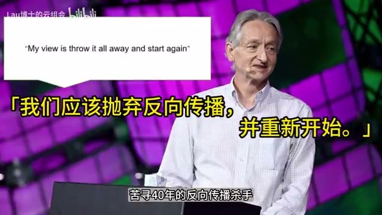
00:00:12–00:00:13 · 画面 00400:00:13–00:00:16 · 画面 005
00:00:13–00:00:16 · 画面 00500:00:16–00:00:20 · 画面 006
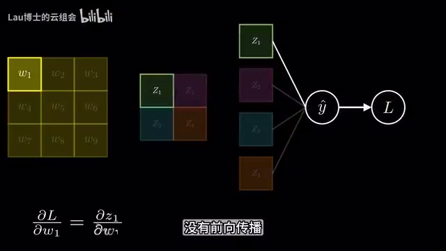
00:00:16–00:00:20 · 画面 00600:00:20–00:00:23 · 画面 007
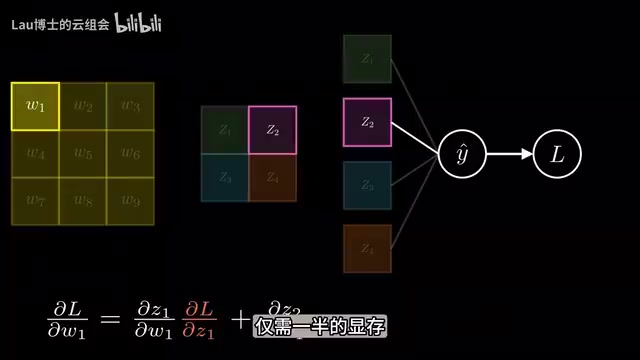
00:00:20–00:00:23 · 画面 00700:00:23–00:00:27 · 画面 008
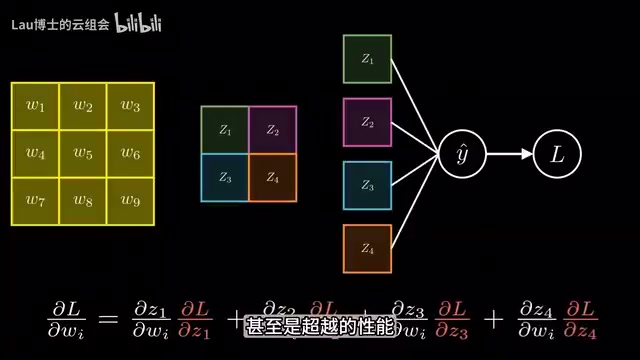
00:00:23–00:00:27 · 画面 008本期硬核解码，看他如何利用层级自制改写 AI 训练法则，用去造哲学重构神经网络认知。欢迎来到六博士的云组会，本期是我们论文精读系列的第八期，非常感谢大家的支持。作为云组会，我们大致会保证每周有一篇高质量的论文精读发布出来，让各位同学每周都有新的论文可以学习。欢迎关注我们成为云组会的一员。
00:00:27–00:00:35 · 画面 009
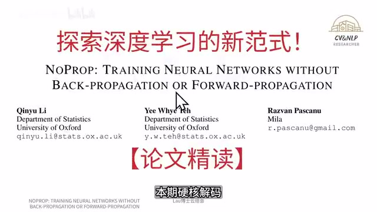
00:00:27–00:00:35 · 画面 00900:00:35–00:00:55 · 画面 010
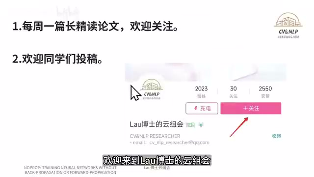
00:00:35–00:00:55 · 画面 01000:00:55–00:00:59 · 画面 011
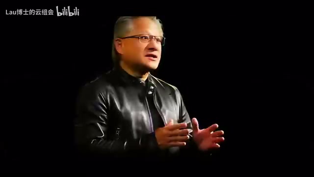
00:00:55–00:00:59 · 画面 01100:00:59–00:01:01 · 画面 012
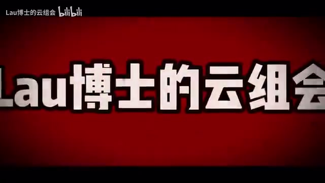
00:00:59–00:01:01 · 画面 01200:01:01–00:01:04 · 画面 013
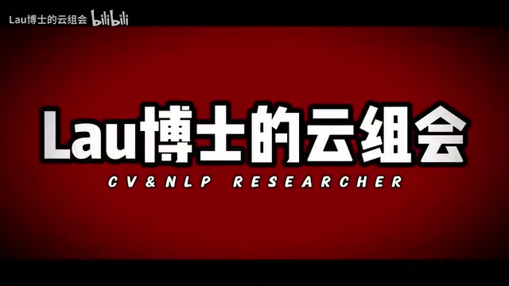
00:01:01–00:01:04 · 画面 013那这篇文章的标题非常的明确，叫 Low-prop training neural network without backpropagation or forward backpropagation。那作者们呢来自于刘金大学和 Mira 研究中心。
00:01:04–00:01:35 · 画面 014
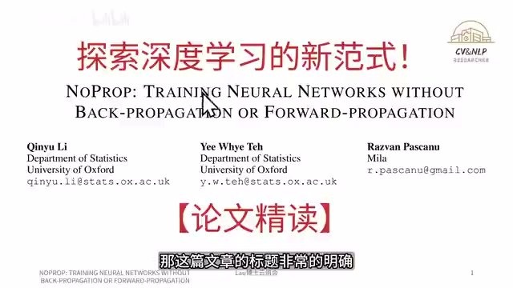
00:01:04–00:01:35 · 画面 014那大家可能会问，没有了这个传统的反向传播和前向传播还可以去训练神经网络吗？那这篇文章呢给出了肯定的答案。那接下来呢让我们一起揭开 Low Plot 方法的神秘面纱，看看它呢是如何打破传统，开辟深度学习的新方式。那这篇文章呢将会按照种分种的结构为大家进行讲解，分别呢是论文背景。
00:01:35–00:01:40 · 画面 015
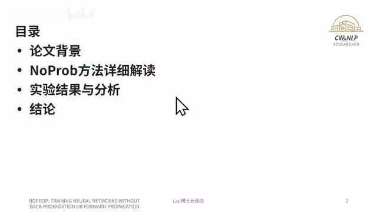
00:01:35–00:01:40 · 画面 01500:01:40–00:02:12 · 画面 016
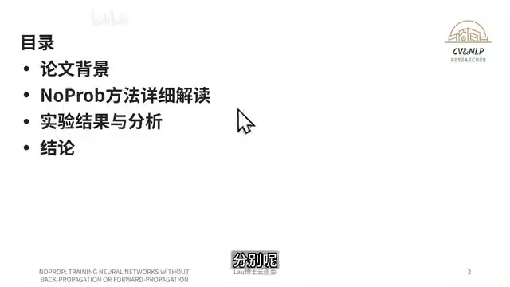
00:01:40–00:02:12 · 画面 016Loput 的方法的详细解读以及实验结果与分析，最后是结论。论文的背景主要是和大家一起来了解一下由反向传播到这篇文章的无反向传播的内容。方法主要是跟大家一起来了解这个方法，它都是会用到什么样的一些公式。下来一个就是实验结果和。分析呢主要就是了解一下 LowPub 给的这个优势。结论呢就是我们再一次的对全文的一个脉络进行一个总结。那在云组会开始之前呢，先解答一下同学们的问题。之前呢有同学实现我平时都是怎么样读论文的。那在这里呢，我花 30 秒的时间来介绍一下我读论文所用到的 AI 工具，抛砖引玉，也欢迎同学呢在评论区分享大家所使用的论文工具。那现在我们看到的画面呢就是腾讯元宝。
00:02:12–00:02:14 · 画面 017
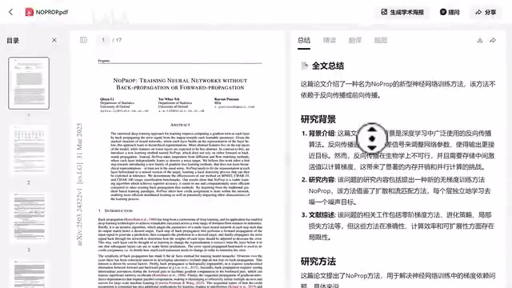
00:02:12–00:02:14 · 画面 01700:02:14–00:02:31 · 画面 018
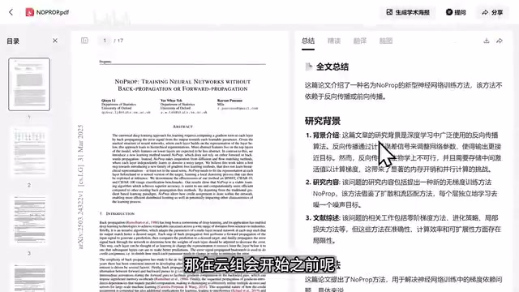
00:02:14–00:02:31 · 画面 01800:02:31–00:02:36 · 画面 019
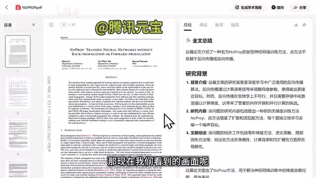
00:02:31–00:02:36 · 画面 019那它呢一方面可以帮助我们呢快速的去翻译英文的这个论文，同时呢还可以精准的提炼出论文的核心内容。那通过它的全文翻译的这个功能呢能让我们更好的去理解这个原文。那此外呢，元宝还有一个非常厉害的功能，那就是生成这个思维导图还有学术海报。
00:02:36–00:02:42 · 画面 020
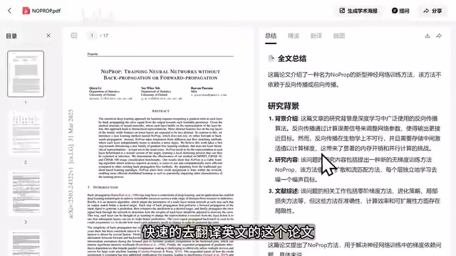
00:02:36–00:02:42 · 画面 02000:02:42–00:02:43 · 画面 021
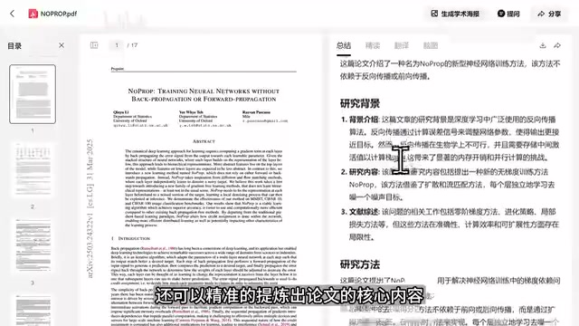
00:02:42–00:02:43 · 画面 02100:02:43–00:02:46 · 画面 022
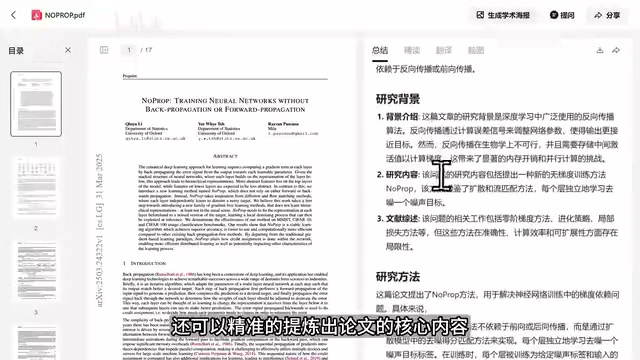
00:02:43–00:02:46 · 画面 02200:02:46–00:02:50 · 画面 023
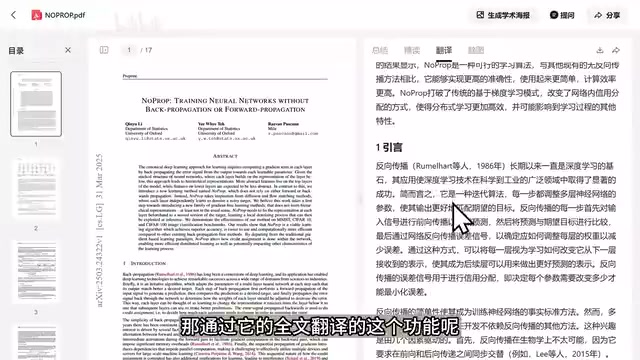
00:02:46–00:02:50 · 画面 02300:02:50–00:02:54 · 画面 024
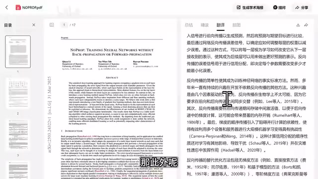
00:02:50–00:02:54 · 画面 02400:02:54–00:02:55 · 画面 025
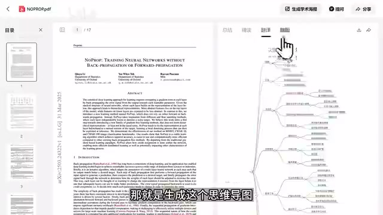
00:02:54–00:02:55 · 画面 02500:02:55–00:02:57 · 画面 026
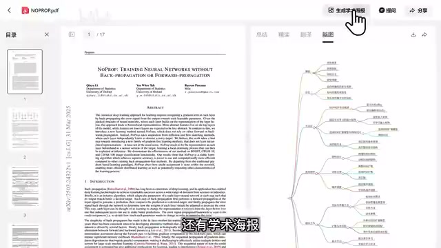
00:02:55–00:02:57 · 画面 026那思维导图的话呢能够更好的去帮助我们呢梳理整个论文的这个框架，同时呢也能够让我们清晰的去看到这个论文的结构跟各部分的之间的关系。而这个海报的这个 poster 呢那就能够让我们很直观的去看到一些论文里面的这个亮点。那这个海报呢无论是在学术的会议或是日程的分享当中呢都是非常的实用的。好的，那我们今天呢先正录正题。
00:02:57–00:02:59 · 画面 027
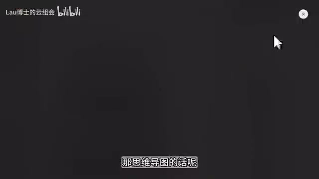
00:02:57–00:02:59 · 画面 02700:02:59–00:03:05 · 画面 028
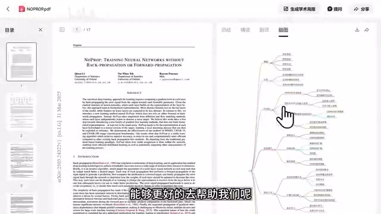
00:02:59–00:03:05 · 画面 02800:03:05–00:03:09 · 画面 029
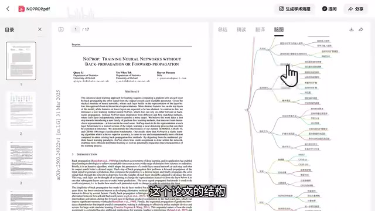
00:03:05–00:03:09 · 画面 02900:03:09–00:03:11 · 画面 030
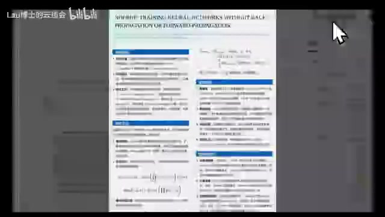
00:03:09–00:03:11 · 画面 03000:03:11–00:03:14 · 画面 031
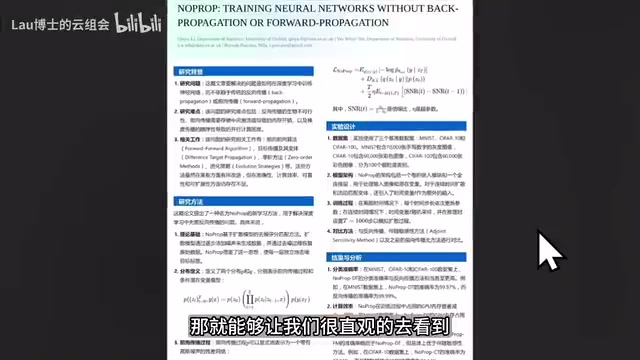
00:03:11–00:03:14 · 画面 03100:03:14–00:03:18 · 画面 032
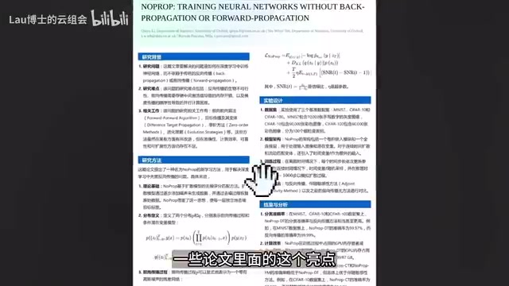
00:03:14–00:03:18 · 画面 03200:03:18–00:03:20 · 画面 033
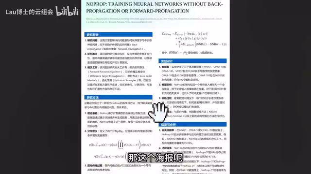
00:03:18–00:03:20 · 画面 03300:03:20–00:03:22 · 画面 034
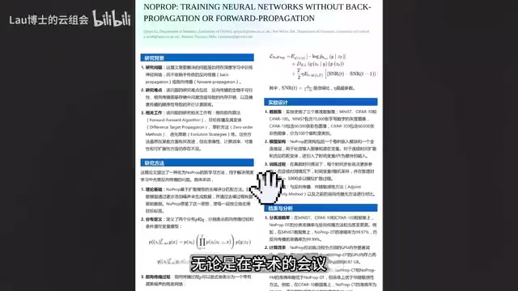
00:03:20–00:03:22 · 画面 03400:03:22–00:03:24 · 画面 035
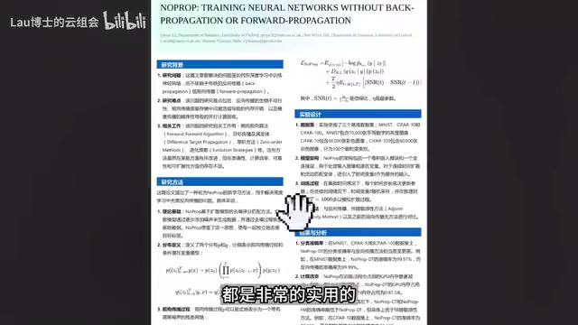
00:03:22–00:03:24 · 画面 03500:03:24–00:03:26 · 画面 036
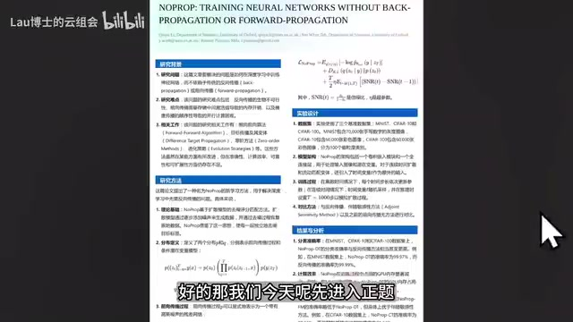
00:03:24–00:03:26 · 画面 03600:03:26–00:03:27 · 画面 037
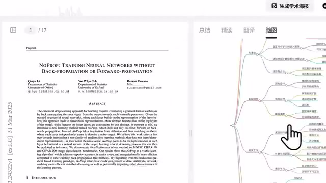
00:03:26–00:03:27 · 画面 03700:03:27–00:04:54 · 画面 038
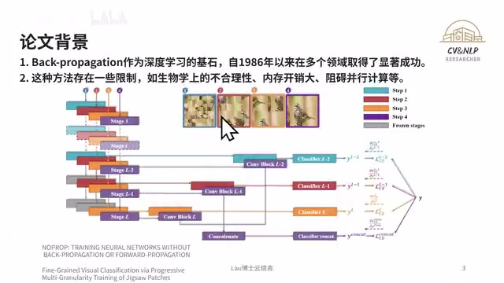
00:03:27–00:04:54 · 画面 038那在介绍深度学习的历史的时候，我们都不得不要提到反向传播算法。那这个是 1986 年的时候以这个 Hinton 等人提出来的，他一直是深度学习的这个核心技术，大力的去推动了这个科学到工业界诸多领域的这个成功。与此同时呢，反向传播它也不是十全十美，也会带来一些问题。比如说它设计在生物学上它是不合理的，需要了一个比较长的前向还有后向的传播，对内存的需求是比较大的，也同时阻碍了并行计算的效率，促使研究者们去找新的学习方法。在这里去给大家展示了一个反向传播的案例。
这个图是来自于北游团队的一个细度分类的一个工作。我们可以看得到从左到右是一个 forward是一个前向传播的过程。这些都是一些实现的一些部分。是前向传播而反向传播的部分是虚线的部分。就是从右到左所以我们可以看得到。实际上它这个无论是前向还是反向。它的一个过程它都是从输入到输出。然后又从输出又回到输入。它的整个链路实际上是非常的长的。
00:04:54–00:04:55 · 画面 039
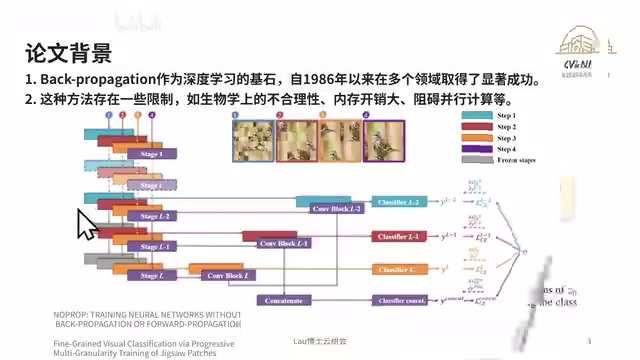
00:04:54–00:04:55 · 画面 03900:04:55–00:06:31 · 画面 040
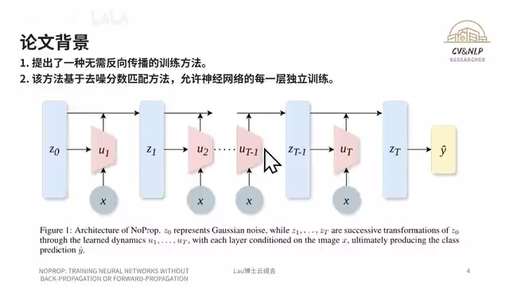
00:04:55–00:06:31 · 画面 040既然前向传播跟反向传播的传统方法。它存在着效率上的问题。那大家都是怎么样去改进的呢。这篇文章提出了它的一种的解决思路。我们看到这个图跟我们平时看到的前向传播。或者是反向传播不一样的地方。就是它这里每一个小的模块里面。它都会有一个输入。这个是一个输入的 X。然后这边这个 Z0 它是一个噪声。这个 U1 我们可以看作是一个模型。
一个可训练的一个模型。那它呢跟这个传统的前向传播不一样的这个地方呢或者说是反传播不一样的地方就在于它呢是这样子一块。就更新一次，然后这里面的每一个块，它都是这样子去更新的。它主要显著的体现就是说，它不是说我一定要从左到右把所有的流程走完，我才更新一次，而是每一个它都是独立的去更新的。如果假如说我们举一个非常好理解的例子那就是我假设现在我要去做一个图像分类的一个任务，那这个 Yhead 呢，我们就是说它是个标签。那这里它每一步实际上做的就是这个 X 就是这个输入嘛，那这个 Z1 呢，它这里训练的时候算出来，实际上它是跟这个 Yhead 去做一个去做一个损失，然后再去更新最前面的一个部分的一个内容
00:06:31–00:06:32 · 画面 041
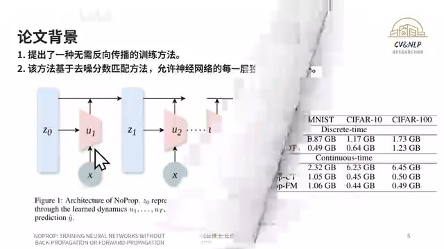
00:06:31–00:06:32 · 画面 041那在实际的这个应用当中 Nobob 给的这个算法的性能呢也是得到了充分的验证那研究者们呢在 MNIST、CIFAR-10 CIFAR-100 这些广泛使用的图像分类的这个基准数据集上面呢去做了测试那结果显示 Nobob 给了
00:06:32–00:06:50 · 画面 042
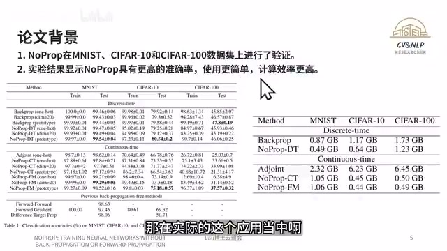
00:06:32–00:06:50 · 画面 042不仅仅是能够达到甚至于是超越无需反向传播的方法的准确率，而且在使用便捷性上面跟计算焦虑也是有明显的优势。也就是表明了 LowPub 给的算法在实际的应用当中是有一定的这种使用价值的，也是为深度学习的领域提供了一种新的有效的训练方法
00:06:50–00:06:55 · 画面 043
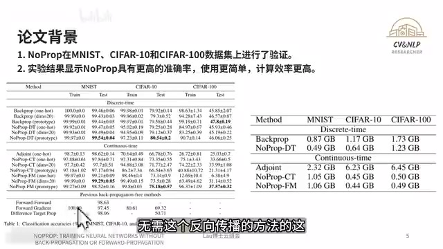
00:06:50–00:06:55 · 画面 04300:06:55–00:07:11 · 画面 044
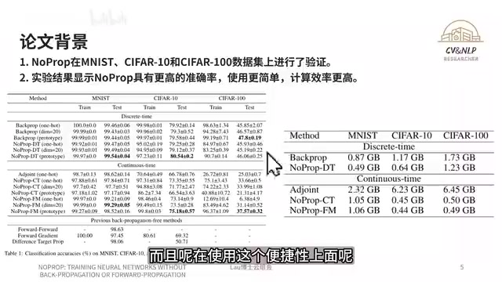
00:06:55–00:07:11 · 画面 04400:07:11–00:07:12 · 画面 045
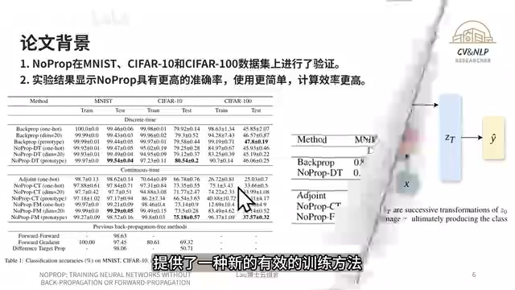
00:07:11–00:07:12 · 画面 045那接下来呢，我们来到这个 Lubeb 给的方法了详细解读的这个部分。正如我在刚刚聊背景的时候提到，实际上呢，他们的这个一个小的这些模块，它都是单独训练的。这就是跟常规的这种前向传播以及后向传播就是有一条很长的链不一样的这个地方
00:07:12–00:08:41 · 画面 046
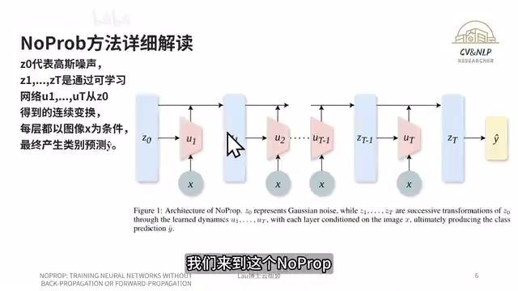
00:07:12–00:08:41 · 画面 046那这个 X 跟 Z0X 是这个图像的一个输入，Z0 是一个噪声，它们呢都是 UE 的这个输入。那这个 UE 呢得到了这个结果以后就会得到这个 Z1，然后给下一个。那当然了，在这个实际的这个训练的时候呢，其实跟这个图的情况啊，我想还是不太一样的。那这个图呢，它更多的应该是反映了它在这个推导的这个过程当中的时候，从左到右的一个过程它通过这种逐级的一个去照呢，最后得到了这个结果 Y-head。那这个结果呢，它应该是跟标签是最接近的。那像 Z1 啊或者是 Z2 啊，那这个结果可能跟这个准确的这个标签的距离呢，还是会比较大的。那所以如果要让我去总结它跟这个常规的
前向传播和反向传播不一样的地方就是在哪里呢？是他们不用把整个流程都走完了，就是他们是可以局部的前向传播跟反向传播。这是我的一个理解，那希望能够给到大家一个参考。那在这里呢，接下来呢，他在文章的这个方法的部分有好多的公式，我们来了解一下这些公式都说了些什么事情
00:08:41–00:08:42 · 画面 047
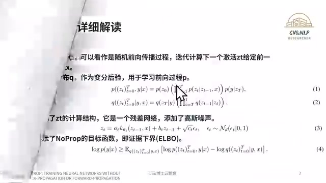
00:08:41–00:08:42 · 画面 04700:08:42–00:10:30 · 画面 048
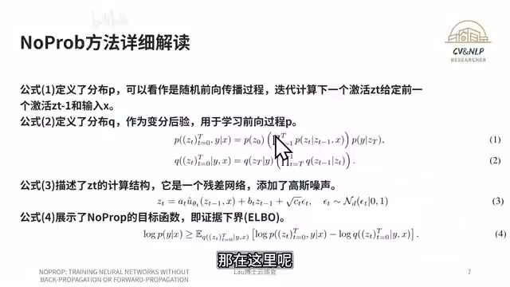
00:08:42–00:10:30 · 画面 048那这个公式 1 呢，它就是定义了这个分布的 P。那这个 P 呢，它就是描述了这个神经网络的激活的一个前向传播的这个过程。那在这个过程当中呢，每个激活的这个 setT 都是基于前一个 setT-1 的这个输入计算得到的，也就是对应了刚刚我们看到的这个过程那实际上从这个公式也可以看到，虽然他说 without 这个什么前向传播这个没有什么反向传播，那实际上他讲的这个 without 只是不是传统意义上的这个 without，那并不是说他真的不用前向传播或者是反向传播。但这个其实我认为还是有的，叫局部的这个前向跟反向传播
好，我们来看公式二。那公式二呢，它是一个变分的一个后验。那它呢，就是跟 P 一起来学这个神经网络的这个前向过程。那允许呢去使用这个变分推断来优化这个模型。那公式三呢，就是说在每个激活的这个 setT 呢，是通过一个残差的这种网络结构来得到的，就也包括了这个高斯的一个噪声那大概是这个部分就是这个残差的一个结构，残差模块。那这种呢，就是我想啊，它应该是跟 Veselet 这个道理是类似的，利用这种残差的这种结构那公式式呢，就是这个目标函数啊，也叫这个 ELBO。那它呢，是对这个自然对数这个 log p 在知道 x 情况下求 y 的 p 啊，通过去最大化这个下界呢，就是可以让它这个训练的神经网络的时候不依赖这个所谓的长的这个前向传播或者是后向传播
00:10:30–00:10:49 · 画面 049
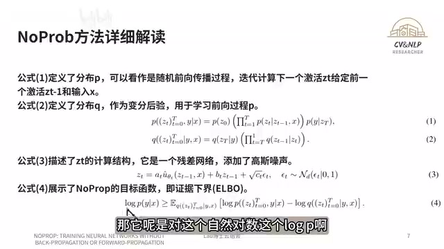
00:10:30–00:10:49 · 画面 04900:10:49–00:10:50 · 画面 050
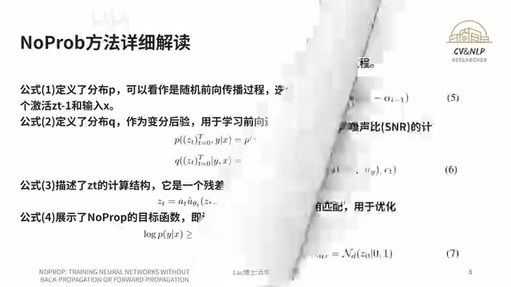
00:10:49–00:10:50 · 画面 050那这个公式五呢
00:10:50–00:11:32 · 画面 051
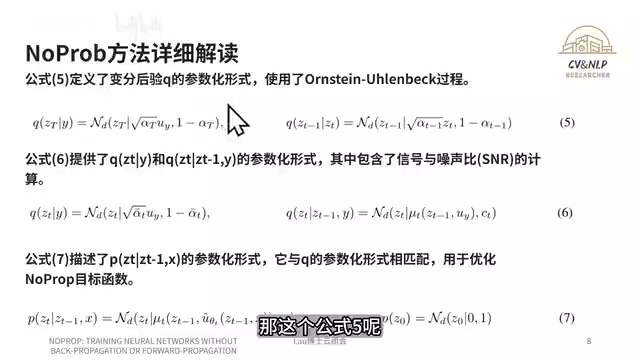
00:10:50–00:11:32 · 画面 051就把这个 Q 啊定义成了这个 OU 的一个过程这个呢，是一个高斯的分布那是用于模拟这个噪声扩散的一个过程那这种设置呢就可以让到呢它可以以一种比较高效的这个方式啊学习这个噪声的一个传播公式六呢就详细的去描述了变分后验的这个 Q的这个参数化的形式那包括这个信号与噪声比啊这个 SNR 的一个计算那这些呢都是 Lowpop 给里面的这个重要的这个数学工具那用于呢去优化它这个模型的训练的这个过程那公式七呢它呢就被设计成啊
00:11:32–00:11:33 · 画面 052
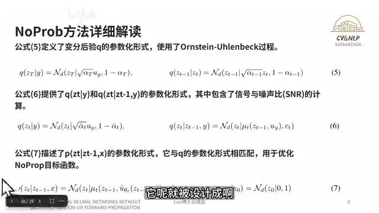
00:11:32–00:11:33 · 画面 05200:11:33–00:11:44 · 画面 053
00:11:33–00:11:44 · 画面 053跟这个参数 Q或说是跟 Q 的这个参数化的这种形式要相匹配那使得可以优化这个 Lowpop 给的这个目标函数
00:11:44–00:11:45 · 画面 054
00:11:44–00:11:45 · 画面 054那来到了公式八呢
00:11:45–00:12:35 · 画面 055
00:11:45–00:12:35 · 画面 055公式八就是这个非常重要的这个部分呢是这个 Lowpop 给的这个目标函数啊那我想实际上应该这个写的是 L那应该也可以叫做损失函数那它这里呢是包括这个交叉三 KL 散度还有这个信号噪声比 SNR那实际上虽然这篇文章说自己他没有用到这个反向传播啊跟这个正向传播当时我就非常好奇那他总得去做这个梯度下降吧那没错实际上他也是有这个损失函数的因为没有损失函数的话那又怎么样去更新呢是吧那我们来看公式 9 那公式 9 的话呢就是说当他是推广到这种连续时间啊他就是有离散时间跟连续时间那我们可以了解一下这个连续时间那这个连续时间呢公式 9 就是这个连续时间的目标函数那这个里面的这个 t 呀
00:12:35–00:12:37 · 画面 056
00:12:35–00:12:37 · 画面 05600:12:37–00:12:39 · 画面 057
00:12:37–00:12:39 · 画面 05700:12:39–00:12:58 · 画面 058
00:12:39–00:12:58 · 画面 058这个 t 呢就会被认为是一个连续的一个变量那在离散里面的时候那它就是 1234 那在连续的话那它就是一个连续的值就会有一些中间的一些小数的一些值那这种方法呢它也是可以去提高这个训练的这个效率
00:12:58–00:12:59 · 画面 059
00:12:58–00:12:59 · 画面 059公式 10 定义了一个条件概率分布 PT 它描述的是从造生 Z0 到最终嵌入到 Z1 的一个路径这个分布它是一个高市的概率路径其中 Z1 是类标签 Y 的一个嵌入 Z0 是初始的造生这个公式是流匹配方法的一个核心这个文章它也提到了流匹配的一个内容
00:12:59–00:14:59 · 画面 060
00:12:59–00:14:59 · 画面 060但我们这里主要是以了解它的公式为主那它允许了这个网络去学习一个向量场那这个向量场就将这个噪声引导到这个预测的标签的嵌入我们看到公式 11这个公式 11 它就是定义了这个流匹配的一个目标函数那它是这个 NoProp 的方法在流匹配的这个情况下去优化的一个目标那这个目标的这个函数衡量了这个网络预测的向量场的这个以及了真实的这个向量场的之间的一个差异那通过最小化这个差异的网络就可以学习到将噪声有效的去引导到这个标签的向量场这个目标的这个向量场是流匹配的就是这个目标函数是这个流匹配的这个关键使得这个
网络在不进行这个前向后向传播进行这个训练实际上讲的还是这种长链路的这个前向后向的这个传播我们来看到公式 12那这个公式 12 呢它是提供了一种参数化那个 Lead这种概率的这个方法那这种方法呢它是用线性外推来估计这个 Lead 的这个标签那这个 setT 啊就是当前的这个激活那这后面的这个 VSETA 的这个部分呢是预测的这个向量场那通过这样子呢就可以得到一个估计类的这个标签就是 SET HEAD 1 结合了这个当前的这个激活预测这个向量场我们再来看到公式 13
00:14:59–00:15:11 · 画面 061
00:14:59–00:15:11 · 画面 061那公式 13 呢是刘匹配的这个修改以后的一个函数我们可以看得到了它一方面呢综合了这个预测这个向量场跟真实向量场二者的这种差异啊二是呢有各种概率的这个交叉上的这个损失那
00:15:11–00:15:12 · 画面 062
00:15:11–00:15:12 · 画面 06200:15:12–00:15:23 · 画面 063
00:15:12–00:15:23 · 画面 06300:15:23–00:15:24 · 画面 064
00:15:23–00:15:24 · 画面 06400:15:24–00:15:56 · 画面 065
00:15:24–00:15:56 · 画面 065现在呢就到了实验结果的这个部分实验结果呢我们在刚刚提到背景的时候有提到那实际上这个 LowPub 给的这个方法啊它在这个 M.Lips CIFAS CIFAS100 的这个注意级上面呢它基本能够跟反向传播的这个性能相当那在某一些方法里面呢甚至于是由于这个传统的这种反向传播的这个方法那我们可以看呢那像这个跟这个就是 mLips 跟西法石它是要比这个反向传播的这个效果要好同时这个 mLips 跟西法石其实两种情况都是不管它是离散还是反向传播的当然了这一个
00:15:56–00:16:05 · 画面 066
00:15:56–00:16:05 · 画面 06600:16:05–00:16:16 · 画面 067
00:16:05–00:16:16 · 画面 067C100 上面的这种情况可能略逊于这个 backpublication 但是到了这个下面的这种情况它又要比上面的要好同时它还是要比下面的这种其他的一些无法传播的这种方法它的效果是要更好的
00:16:16–00:16:17 · 画面 068
00:16:16–00:16:17 · 画面 06800:16:17–00:16:21 · 画面 069
00:16:17–00:16:21 · 画面 06900:16:21–00:16:24 · 画面 070
00:16:21–00:16:24 · 画面 070接下来呢是一个可视化的一个内容那这个可视化的内容呢有两行第一行呢是这个使用了最小中位数距离初始化的一个类别的一个嵌入那第二行呢是说这个 Lopop 给的他在学习到这个类别嵌入的时候这个类别的这些嵌入呢可以解释成为的这种圆形的一个图像那实际上下面的这个我可以认为啊我认为就是某一些类别的一些特征就是他认为的这个圆形图啊
00:16:24–00:17:00 · 画面 071
00:16:24–00:17:00 · 画面 071那这样子的话呢或许也是有利于这个模型它去做决策的那文章里面的这个图 3 呢就展示了在连续时间的这个设置里面呢用这个温和的这个标签嵌入模型的这种准确率跟累计时间的训练时间的一个关系 Loebber 给的这个 CT 呢在这个 CIFAR-10 与 CIFAR-100 的这个数据集上面呢比这个 Adjoin 这个方法
00:17:00–00:17:54 · 画面 072
00:17:00–00:17:54 · 画面 072也就是绿色的这一条都要更快，而且能够达到很高的一个准确率。那表明了这种 Low Public Gate 的 CT 在训练的这种效率上，它是很有优势的。那尽管在这个 MNIST 里面，这个 Adjoint 的这个方法，它是这个准确率跟这两种 Low Public Gate 的这个方法，它都是相近的，但是 Low Public Gate 的这个训练速度，它就是要来得更快。
00:17:54–00:17:55 · 画面 073
00:17:54–00:17:55 · 画面 073那文章的这个图示呢，它就是这里呢就说了，这个 Softmax 跟后验概率两种不同的这种类别的概率的参数化的方法，在不同数据级上面的一个测试的准确率。那可以看得到，实际上这些性能呢都是有所不同的。那有时候呢，就是这个 Softmax 会高一些啊，在 Mlib 上面，那 CIFAR-10 呢有高有低。
00:17:55–00:18:32 · 画面 074
00:17:55–00:18:32 · 画面 074多数是这个后验的这个会高一点，当然了，中间这个定等于 20 的时候，它就低下去。然后在这边的话呢，也是类似的这个情况。那到了鼻显存的这个环节了，那在离散的这个情况下呢，在 mNips 跟西法石的时候呢，Low Purple Gate 相比这个 Bad Purple Gate 它。
00:18:32–00:18:33 · 画面 075
00:18:32–00:18:33 · 画面 07500:18:33–00:19:01 · 画面 076
00:18:33–00:19:01 · 画面 076大概呢是用一半的这个显存呢就能够达到 Bubble 给的这个性能啊甚至是超过它那在西法石上呢相对来说提升呢就节省的这个效率上没有那么高啊但是还是要比 Bubble 给要低那如果在连续时间里面呢这个对比 ADJ 这个优势就非常大了首先呢
00:19:01–00:19:03 · 画面 077
00:19:01–00:19:03 · 画面 077就是这个 low-paper 给用的这个显存，仅仅是 Adjoint 的这个一半，在 AMVIP 上面，那在 CIFAR-10 或者是 CIFAR-100 上，那这个幅度都已经超过了十倍了。就是节省显存的这件事情上面，也是说明了这个 low-paper 给在训练的时候，它耗卡的这个就是没有耗那么多，它的这个效率它就是高。
00:19:03–00:19:05 · 画面 078
00:19:03–00:19:05 · 画面 07800:19:05–00:19:09 · 画面 079
00:19:05–00:19:09 · 画面 07900:19:09–00:19:10 · 画面 080
00:19:09–00:19:10 · 画面 08000:19:10–00:19:25 · 画面 081
00:19:10–00:19:25 · 画面 08100:19:25–00:19:26 · 画面 082
00:19:25–00:19:26 · 画面 082到了这个文章的这个图谱啊，就展示了这个当类别的嵌入的这个维度跟图像的这个维度相匹配的时候，不同的这种类别嵌入这个主义证的初始化的一个方法，对 lowpip 给 dt 的这种性能的一个影响。那实际上我们可以看到呢，基本上就是这个正交初始化跟原型初始化呢，它是跟这个 random 相当或是要好过它的，因为我们可以看啊，这三种数据集里面。
00:19:26–00:19:48 · 画面 083
00:19:26–00:19:48 · 画面 08300:19:48–00:20:07 · 画面 084
00:19:48–00:20:07 · 画面 084MNIST 里面就是这个 Prototype 的还有这个 CIFAR-100 的基本跟 Random 是相当，最左边的这个就是 CIFAR-10 跟 CIFAR-100 都是要比 Random 的要好的。最后我们来总结一下这篇文章，这篇文章。
00:20:07–00:20:08 · 画面 085
00:20:07–00:20:08 · 画面 08500:20:08–00:21:33 · 画面 086
00:20:08–00:21:33 · 画面 086就提出了一个叫做 low-bubble gate 的这种方法，这种是一种不依赖于传统这种比较长的前向或者是后向传播的神经网络的训练技术。low-bubble gate 的核心思想是让网络的每一层独立的去学习，仅通过了给定的这种造成标签和训练的这种输入来预测目标的。标签那在实际的这个应用当中，每一层它都会接受前一层的这种造成标签，通过预测这个标签去做这个去照的处理，从而逐步的去恢复出清晰的这个目标标签。那经过这些实验里面的验证，我们能看到 NoPubGate 在性能上是优于过往的这种无后这个。
没有反向传播的这种方法，展现出更高的这种效率，更强的这个鲁邦性，也有更好的这种更低的这种计算复杂度。这种方法的话，是给我们提供了一种全新的视角，也是开辟了新的这种研究方向，研究者期望说这一个方向能够激发更多关于。没有反传播的这种训练的研究，推动深度学习的领域的发展。今天我们的云组会到这里就结束了，如果对你有所启发，感谢三连家关注，如果你有什么想法，欢迎留言，我们下一期节目不见不散。
00:21:33–00:21:33 · 画面 087
00:21:33–00:21:33 · 画面 087转写与来源说明 · 0 个自动复核提示
保留 131 个原始语音片段，0 个片段触发自动复核提示。提示仅用于定位可能的术语、重复或识别问题，不等于已确认错误。
讲解画面为源视频截图（640×360），不是可编辑 PPT 文件。全片按每秒 2 帧扫描内容变化，逐步展开页保留；连续动画保留代表画面。清晰度受源视频限制。
原视频：paper/合集_2026-10-16_论文精读/反向传播被判死刑！？“去噪学习”杀疯了：NoProp【论文精读】.mp4
SHA-256：ba44102c393444e63d512efa3ac7e37532d2bdf06bb812d1ffd68118ef180c9f
全文按视频语音与画面制作。原论文可从上方链接下载；完整资料包保留全文、原始逐字稿、字幕和校对记录。